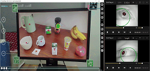
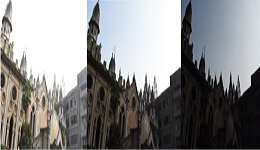
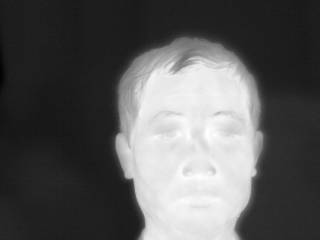
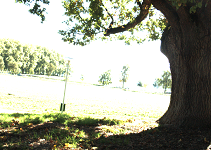

首页>
资源
首页>
资源
| 样例 | 名称 | 描述 | 下载链接 |
|---|---|---|---|
|  | Gaze-IO | 人们凝视着感兴趣的物体以表达意图 请引用: Z. Gao, S. Wu, Z. Wan and S. Agaian, "A Hybrid Method for Implicit Intention Inference Based on Punished-Weighted Naïve Bayes," in IEEE Transactions on Neural Systems and Rehabilitation Engineering, vol. 31, pp. 1826-1836, 2023. | [下载 ] 提取码: zu34 |
| 有雾图像 | 79张带雾图像 请引用: Z. Li, H. Shu and C. Zheng, "Multi-Scale Single Image Dehazing Using Laplacian and Gaussian Pyramids," in IEEE Transactions on Image Processing, vol. 30, pp. 9270-9279, 2021. | [下载] | |
|  | 高动态图像 | 高动态图像 请引用: C. Zheng, W. Jia, S. Wu and Z. Li, "Neural Augmented Exposure Interpolation for Two Large-Exposure-Ratio Images," in IEEE Transactions on Consumer Electronics, vol. 69, no. 1, pp. 87-97, 2023. D. C. Zheng, Z. Li, Y. Yang and S. Wu, “Single image brightening via multi-scale exposure fusion with hybrid learning,” IEEE Trans. Circuits and Systems for Video Technology , vol.31, no.4, pp.1425-1435, 2021. | [下载 ] 提取码: 7kdi |
|  | 红外人脸识别数据库 | 1.
红外图像由FLIR A40相机拍摄。
2. A40摄像机提供三种输出:红外图像、温度信息和原始数据。
3. 温度信息以MAT格式存储在数据集中。
Please Cites: S. Wu, W. Lin and S. Xie, "Skin heat transfer model of facial thermograms and its application inface recognition," Pat. Recog. vol.41, no.8, pp.2718-2729, 2008. | [下载 ] 提取码: oql0 |
|  | 低动态范围图像 | 低动态范围图像
Please Cites: S. Wu, Z. Li, J. Zheng and Z. Zhu, "Exposure-robust alignment of differently exposed images," IEEE Signal Processing Letters, vol. 21, no.7, pp. 885-889, 2014. | [下载 ] 提取码: 4gs5 |